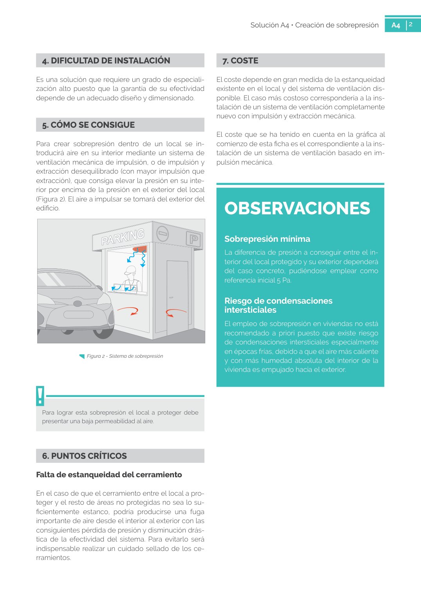

GUIA · 5. CÓMO SE CONSIGUE · versión sin-fecha · capa guia
Formatos: JSON compacto · Markdown · PDF fuente
Ámbito del documento · texto del ámbito · documento y tablas
Tipo: figuras · nivel 1 · sección estimada: 5. CÓMO SE CONSIGUE · padre:
5. CÓMO SE CONSIGUE Para crear sobrepresión dentro de un local se in troducirá aire en su interior mediante un sistema de ventilación mecánica de impulsión, o de impulsión y extracción desequilibrado (con mayor impulsión que extracción), que consiga elevar la presión en su inte rior por encima de la presión en el exterior del local (Figura 2). El aire a impulsar se tomará del exterior del edificio. Para lograr esta sobrepresión el local a proteger debe presentar una baja permeabilidad al aire. Figura 2 - Sistema de sobrepresión

PDF fuente redistribuible: copia fiel enlazada en esta página (SHA256 verificado).